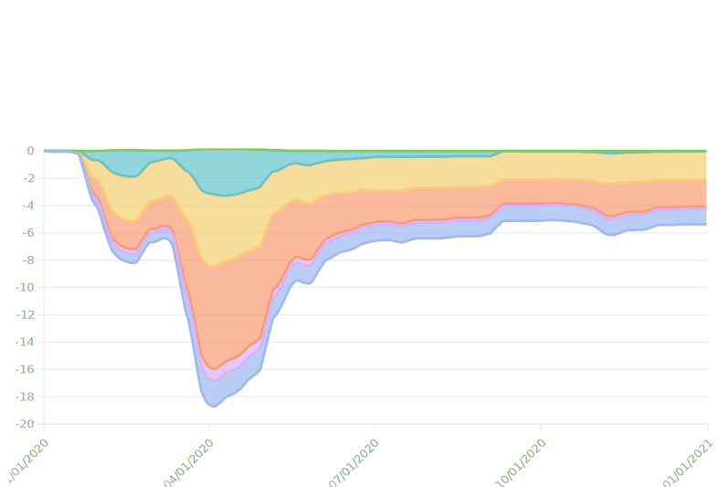

The Pandemic Decreased Global CO₂ Emissions, But Only by a Little
The Covid-19 pandemic proved a disaster in many ways to humanity. But for the globe, there was a silver lining - a decrease in carbon dioxide emissions. Due to government policies, energy use patterns were drastically altered all around the world. International borders were closed, and people were confined to their homes. That meant no more travel to work, no more spring breaks to the Bahamas, and no visits to the movie theater. Yet due to Covid relaxations in the second half of 2020, CO₂ emissions have been making a comeback in some countries.
Global CO₂ emissions fell by 6.4% or 2.3 billion tons in 2020. This is a significant shift considering most countries in the world have seen a steady increase in emissions every year during the past decades. It wasn’t until the Paris Agreement in 2016 that world leaders decided to at least try to slow down the rapid increase in emissions. And yet, the pandemic by far outperformed the Paris Agreement in slowing down emissions. Still though, the decrease wasn't as big as many climate scientists had predicted based on the pandemic's significant projected impact on people's day-to-day lives.

Which countries saw the biggest decrease in CO₂ emissions? As you can see in the map above, almost every country saw a decrease but some more than others. Blue colors indicate that emissions were lower than before the pandemic. Red colors indicate they were higher. The darker the color, the higher or lower the emission changes. For instance, the U.S. saw a change of -10% which means it produced 10% less emission gasses in 2020 than in 2019 (hence it's color changed from baby blue to deep blue). Likewise, most countries in Europe saw significant reductions. Greece, for instance, saw an 18% drop and Spain 17%
While China saw a drastic decrease in CO₂ emissions during the first half of 2020, it was one of the first countries to recover from the pandemic. Hence, when things were moving back towards normal, the government turned up for a carbon-intensive economic recovery. As a result, in the 12 months since China began relaxing Covid-19 lockdowns, CO₂ emissions have exceeded pre-pandemic levels by 7%. China, therefore, had an overall increase of 1.6% in 2020.
Other countries are expected to experience similar results as China. Once Covid relaxations are fully in place, governments will be in a rush to make up for lost time and money by increasing coal and steel productions. Likewise, people are tired of being confined to the indoors and will seek travel and other energy-heavy activities as restrictions are lifted.
As seen in the graph below, different sectors of emissions are already recovering and are expected to level out by late 2021.
One of the main emission contributors are power plants that burn fossil fuel, such as coal or natural gas, and industries that drill or mine for these energy sources. In addition, there are emission generating sectors humans are more familiar with on a day-to-day basis, such as residential emission (emissions from cooking, space and water heating, cloth drying, etc.), surface transportation (by rail or road), and aviation (plane trips).
Sectors that humans interact most with directly such as aviation and surface transportation were impacted the most with nearly 15% and 17% respectively during the pandemic. Yet they were also the fastest sectors to recover once many countries invoked covid relaxations in the fall of 2020.
The “United in Science 2021 report” presents the latest data and findings related to climate change to inform policy and action. One of its key findings is that while emission reductions during the start of the pandemic likely reduced the annual increase of the atmospheric concentration of greenhouse gasses, this effect is so small that it’s hard to statistically distinguish from natural variability.
UN Secretary-General Antonio Guterres delivered a video message for the release of the report at a press conference given by WMO Secretary-General Prof. Petteri Taalas.
“We are still significantly off-schedule to meet the goals of the Paris Agreement. This year has seen fossil fuel emissions bounce back, greenhouse gas concentrations continuing to rise and severe human-enhanced weather events that have affected health, lives and livelihoods on every continent. Unless there are immediate, rapid and large-scale reductions in greenhouse gas emissions, limiting warming to 1.5°C will be impossible, with catastrophic consequences for people and the planet on which we depend,” Guterres said.
While the Covid-19 pandemic might have offered a short-term reduction in global emissions, the pace at which countries are rebounding will likely outdo it. According to the United in Science, the world won’t meet the goals of the Paris Agreement for 2030 unless countries pursue an economic recovery that incorporates strong decarbonization.